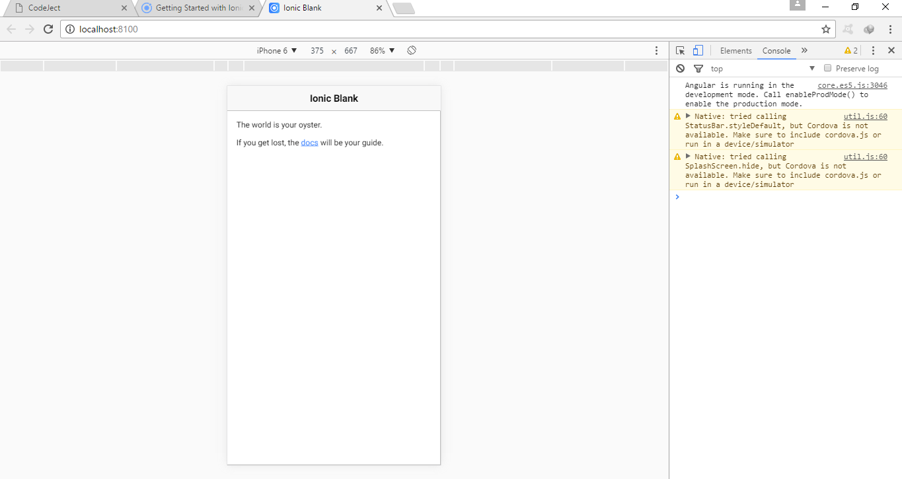
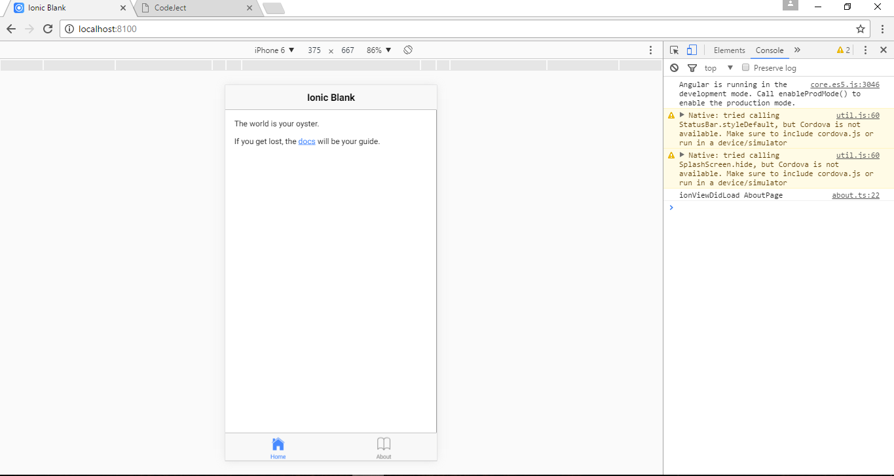
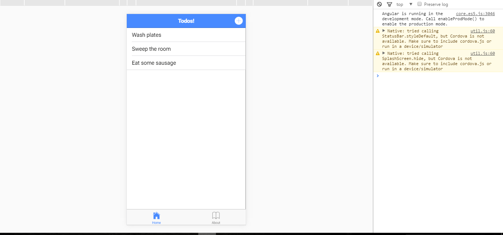

Objectives: We'll build a Todo Mobile App
Installing Ionic
Installing ionic is quite easy. First, we need to install nodejs. You can find download link here or you can verify that you have it by typing node -v in the command line. It will be used to manage dependencies from npm.
Next run the command below which installs the latest version of ionic framework.
The command above will install ionic globally on our machine. We can now create a new ionic project using the CLI. Using the command line, change directory to where you want to create the project and run
This will create a new app with the blank template. serve the app so that we can see it in a browser.
This compiles the app and spins up a development server. The app should automatically open up in a browser. If not, enter the url in the browser. To simulate a mobile view in the browser, open up a developer view. In chrome, right-click and select inspect.

Ionic Folder Structure
Ionic have many folders and files. We'll not discuss all the folders and files now since that can be very boring. However, notice the src folder. That's is where we'll work more often with. It contains subfolder for our pages, program logic, theming and much more.
The node_modules contains our dependencies. We'll not work directly with this folder since it will be managed by npm. Notice our package.json folder which keeps track of dependencies used.
If you are familar with basic angular coding then ionic will be quite easy.
Creating Pages
Pages can be generated using the cli. How many pages will be needed for our Todo App? We'll need pages for adding Todo items, updating Todo items and our existing home page will display the list of Todos. We'll also add an about page for working with tabs.
So, let us create the pages
Next is to add the pages to our app.module.ts
Add Tabs
Let's use this example to illustrate how we can add tabs in a page. We'll manually create a component to hold the tabs. Create a folder in the src/pages directory named tabs. Inside the folder, create a file tabs.ts and add the content.
tabs.ts
Notice that we have created two tabs which will set the root to either the home page or about page. To use it, change the root page that is currently set to homepage in the app.component.ts to use the tabspage.
app.component.ts
Also, do not forget to add the tabspage to the app.module.ts just like we added the other pages. After recompiling, you should see the tabs the welcome page with the tabs.

That was quite easy to implement. Notce the tabs below and of course, you can add as many tabs as you want. Also, the page that is loaded first is that of the first tab, that is the homepage in this case.
To see the app in action, we'll add a dummy data to see to home.ts
Notice that we have an array of three items which will initialize once the page loads as we can see from the life-cycle hook.
Modify the home.html so we can see the changes
This is what we should have so far.

Navigation in Ionic
Navigation in ionic work using stack. We push and pop pages. Now, let us work on adding a new Todo.
Modify the add-todo.html to reflect the changes below
Obviously, we have two functions to define in the class. notice we also bind a property to a value (title) which will defined in the class.
add-todo.ts
We injected the ViewController which let us dismiss the view (modal). we are also passing back the data to the view that triggered this modal. In this case, the homepage.
Modify the home.ts
From the homepage, we set the add-todo to appear as an modal (overlay). When the page is dismissed, we want to get the data passed from it and push it to our array.
Save and let it recompile, you should be able to add Todo and see it in the home page
Swipe Gesture
We'll implement a swipe functionality which is common in mobile apps. You can read more about it in the official docs.
modify the home.html to reflect the changes below
The ion-item-sliding is used to implement the slider as seen above. We can have one or more buttons with a click listener in the ion-item-options. Add the delete function to the class
home.ts
We get the index position of the item in the array and used the splice method to remove it. After recompiling, you should be able to add item to the list, swipe it and click on the button to delete it.